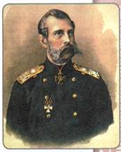
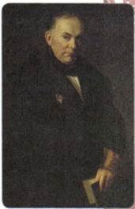
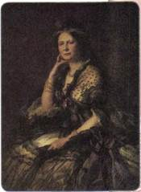
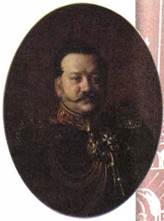
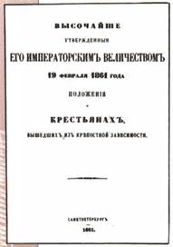
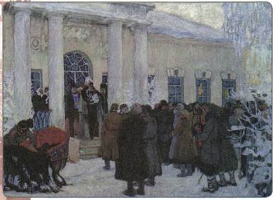
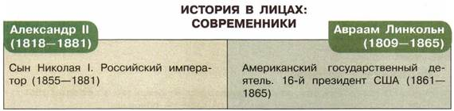
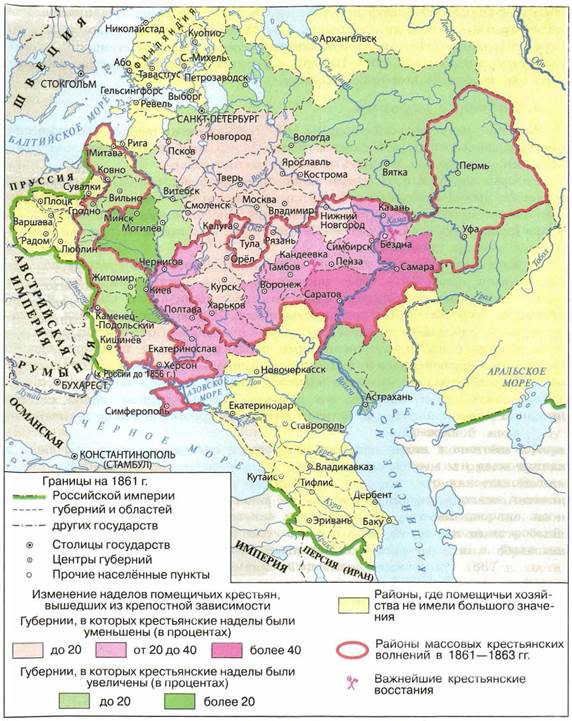

Почему отмена крепостного права в 1861 г. считается одной из важнейших вех в истории России?
1. Новый император
Александр Николаевич, сын Николая I, родился 17 апреля 1818 г. Его воспитание было поручено полковнику К. К. Мердеру, боевому офицеру, имевшему множество ранений и наград. Другим наставником Александра был поэт В. А. Жуковский, который в составленном «плане учения» стремился ограничить время, отводимое для занятий военным делом, опасаясь, что воспитанник «привыкнет видеть в народе только полк, в Отечестве — казарму». С 16 лет Александра стали приобщать к государственным делам. Будущему императору читали практические курсы высшие государственные сановники, например М. М. Сперанский — юриспруденцию, Е. Ф. Канкрин — экономику («краткое обозрение русских финансов»).

Александр II
Вспомните, чем знамениты учителя юного Александра.
Наследник престола совершил большое путешествие по России и Европе в 1837—1838 гг. Александр посетил губернии европейской части страны, побывал на Северном Кавказе (во время военных действий), в Закавказье, Крыму. Он знакомился с жизнью страны, узнавал, чем и как живёт народ. В Сибири он встретился с декабристами, проникся к ним состраданием и по возвращении ходатайствовал перед отцом о смягчении их участи. Во время путешествия за границу Александр познакомился со своей будущей женой. В возрасте 23 лет он женился на дочери герцога Гессенского (принявшей после крещения в православие имя Мария Александровна).
После кончины Николая I в 1855 г. Александр II вступил на престол. К этому времени ему было 36 лет, он являлся уже вполне сложившимся человеком, был хорошо знаком с государственной деятельностью. Новый император, воспитанный в традициях николаевской системы, не был ни либералом, ни сторонником коренных реформ в стране, более того, ему нравились порядки, установленные отцом. Но всё же, как военный человек, осознавший истоки причин поражения в Крымской войне, как государственный деятель, для которого престиж и величие державы были превыше всего, он встал на путь реформ.

В. А. Жуковский
Именно в правление Александра II были предприняты важнейшие реформы, серьёзно изменившие путь развития страны. В первую очередь это Крестьянская реформа 1861 г. (отмена крепостного права), а также реформы 1860—1870-х гг. — городская и Земская реформы, Военные реформы, реформа системы образования.
2. Причины отмены крепостного права
Споры о том, почему именно Александр II осуществил реформу, ведутся историками не одно десятилетие. Несмотря на разные взгляды, большинство историков среди причин отмены крепостного права называют две основные.
Первая — это необходимость ликвидации отставания России от индустриально развитых стран. Крепостное право тормозило развитие товарно-денежных отношений, рынка вольнонаёмной рабочей силы, техническое переоснащение промышленности, армии и сельского хозяйства. Крепостное право консервировало сословные привилегии, сословный суд, власть дворянства на местах, сохранение рекрутской армии.
Второй причиной была необходимость ослабления социального напряжения. Сохранение крепостного права вызывало недовольство крестьянства, в ряде губерний вспыхивали восстания. Во время Крымской войны многие крестьяне самовольно уходили от помещика в ополчение, поверив распространившимся слухам о том, что за участие в войне якобы им дадут вольную. Наиболее ярко это состояние выразил сам Александр II, заявив: «Лучше отменить крепостное право сверху, нежели дожидаться того времени, когда оно само собой начнёт отменяться снизу».
Кроме того, нельзя было не учитывать общественное мнение (как внутри страны, так и в Европе), которое осуждало сохранение пережитка феодализма в России как символ нецивилизованности и негуманности.
Было ли крепостное помещичье хозяйство рентабельным? По этому вопросу историки также продолжают спорить. С одной стороны, часть помещичьих хозяйств к середине XIX в. действительно разорялась, помещики закладывали поместья в банк, разрушалось классическое барщинное хозяйство. Это привело к тому, что некоторая часть дворян (3,5 %) к середине XIX в. не имели поместий вообще, а 46 % дворян имели менее 20 душ крепостных.
С другой стороны, рост цен на крепостных и на имения с ними обгонял рост хлебных и промышленных цен. В этот же период выросли денежная компенсация за рекрутов и оброк. Эти факты косвенно свидетельствуют о том, что сохранялось достаточное количество крупных помещичьих хозяйств, для которых оставалось рентабельным использование труда крепостных крестьян. Не случайно примерно две трети дворянства возражали против отмены крепостного права. Поэтому реформа была осуществлена сверху, по воле власти, которая осознавала пагубность сохранения этого феодального института. Крепостничество тормозило индустриальное развитие страны и снижало международный авторитет России.
3. Подготовка реформы
По восшествии на престол Александр II в 1857 г. образовал Секретный комитет для обсуждения проектов Крестьянской реформы. Члены комитета в течение года рассматривали проекты, составленные его предшественниками При дворе и в среде высших чиновников были те, кто стремился покончить с крепостничеством. Александра II поддерживали в этих замыслах его брат великий князь Константин Николаевич, министр внутренних дел С. С. Ланской, супруга его дяди великая княгиня Елена Павловна. (Она в 1857 г. освободила своих крестьян в имении Карловка Полтавской губернии, активно участвовала в подготовке реформы.) На страницах газет либерального направления велось обсуждение крестьянского вопроса.

Великая княгиня Елена Павловна

Я. И. Ростовцев
Многие помещики к тому времени поняли, что лучше принять участие в подготовке реформы, чтобы направить её в выгодное для себя русло. В ответ на их прошения Александр II издал так называемый «рескрипт Назимову» (генерал-губернатору Виленской губернии). В нём говорилось о том, чтобы в каждой губернии Северо-Западного края были учреждены губернские комитеты из помещиков для обсуждения крестьянского вопроса и для подготовки проектов освобождения крестьян. Этот рескрипт положил начало созданию подобных комитетов во многих других губерниях страны. Таким образом подготовка реформы стала всеобщей и гласной, открытой, с неё спала пелена секретности.
В 1858 г. Секретный комитет был преобразован в Главный комитет по крестьянскому делу.
В 1859 г. были созданы Редакционные комиссии при Главном комитете. Их задачей было рассмотрение всех проектов, подготовленных местными комитетами, и составление на их основе единого для всей страны закона. В комиссиях работали чиновники и эксперты. Возглавлял Редакционные комиссии член Государственного совета Я. И. Ростовцев. В 1860 г. документы были переданы в Главный комитет, а потом в Государственный совет для обсуждения.
4. Содержание и сущность реформы
19 февраля 1861 г. император Александр II подписал манифест, возвещавший отмену крепостного права, а также ряд законов, регулировавших проведение реформы («Общее положение о крестьянах, вышедших из крепостной зависимости» и др.).
По этой реформе крестьяне сразу получали личную свободу, т. е. свободу перемещения, заключения брака, гражданских сделок, торговли, перехода в другие сословия и т. д. (чего ранее нельзя было сделать без согласия помещика).
Крестьяне освобождались с землёй, однако земля не сразу становилась их полной собственностью. Свой надел они должны были выкупить у помещика, по-прежнему работая на барщине или выплачивая оброк. Размеры выкупа земли в каждом регионе были разными. Но везде государство помогало крестьянину совершить выкуп: оно оплачивало 80 % стоимости надела, а остальные 20 % выкупной суммы крестьянин выплачивал помещику сам (сразу или в рассрочку, деньгами или отработками). Деньги, которые выплатило государство, крестьяне должны были вернуть в течение 49 лет, ежегодно выплачивая 6 % от полученной суммы (так называемые выкупные платежи государству). Это переходное состояние между крестьянином крепостным и крестьянином-собственником называлось временнообязанное состояние.

Титульный лист «Положений о крестьянах, вышедших из крепостной зависимости»
В законе было чётко указано, какие размеры земельных наделов крестьяне должны получить в каждом регионе. Эти нормы были установлены конечно же в интересах помещиков, разрабатывавших закон. Если крестьянин пользовался до реформы 1861 г. наделом, размер которого был выше нормы, установленной в этой губернии, то он должен был вернуть помещику «лишние» земли (проводились так называемые отрезки). Если же надел крестьянина имел размер ниже установленного, то помещик обязан был или прирезать недостающую землю, или снизить повинности. В результате отрезки встречались чаще, чем прирезки земли.
Для того чтобы урегулировать все эти вопросы, были учреждены специальные должности мировых посредников. Назначаемые из местных дворян, они вместе с сельскими старостами в течение двух лет должны были составить уставные грамоты, где обозначались условия сделки для каждой общины. Посредниками между сельским миром и властями стали созданные губернские по крестьянским делам присутствия.
Крестьяне, получив личную свободу, отныне должны были иметь самоуправление. Если прежде помещик выполнял по отношению к крестьянской общине функции сборщика податей, полицейского надзирателя, представителя интересов в суде и др., то теперь в деревнях необходимо было создать органы управления. Основой новой системы самоуправления становились сельский сход и волостной сход. На этих собраниях сельское общество избирало старосту, сборщика податей, старшину.

Чтение манифеста (Освобождение крестьян). Художник Б. М. Кустодиев
5. Значение реформы
Значение Крестьянской реформы 1861 г. было очень велико. Отменив крепостную зависимость, она сделала около 24 миллионов крестьян лично свободными, коснувшись большей части населения страны.
Реформа открыла путь новым экономическим отношениям, способствовала созданию рынка свободной рабочей силы. Однако она имела и ряд недостатков, главным из которых было сохранение многих пережитков крепостного права (временнообязанное состояние крестьян). Она также не решила проблему малоземелья крестьян.
В результате передачи отрезков помещикам крестьяне в среднем по стране потеряли около 20 % своих прежних наделов. Теряли они, как правило, самые лучшие земли: с лугами, выпасами, водопоями и т. д. Свой надел крестьяне не получали в частную собственность. Землю можно было покупать, арендовать, передавать по наследству, но не продавать. Сохранялась крестьянская община с прежними традициями передела земли и круговой поруки. Государство компенсировало помещикам потерю рабочей силы. Крестьяне же, обязанные совершать выкупные платежи, отныне выплачивали стоимость не только земли, но и, по сути, тех доходов, которые теряли помещики, лишившись крепостного труда. В итоге выкупали крестьяне землю по ценам на 25 % выше рыночных.
Причины сохранения остатков феодальной системы крылись в сроках и обстоятельствах проведения реформы. Шла реформа по историческим меркам довольно быстро: всего 50 лет. Реформа проводилась сверху, а не в силу внутреннего разложения и активного вытеснения новыми общественными отношениями. Поэтому большая часть основных участников реформы, т. е. дворяне и крестьяне, не были к ней в полной мере готовы. Большинство помещиков не использовали технику, агрокультурные приёмы, не были втянуты в активные рыночные связи. Крестьяне были в массе своей неграмотны и бедны. Отсутствовала развитая финансовая система, например кредитование, которое могло бы смягчить участникам реформы их адаптацию к новым условиям. Сохранялся сословный строй общества. Реформа носила компромиссный характер: она была проведена с учётом интересов помещиков, государства и крестьян.


Крестьянская реформа 1861 г.
Работаем с картой
Используя карту, выясните, на каких территориях по результатам реформы 1861 г. были распространены отрезки земель, на каких — прирезки.
ПОДВЕДЁМ ИТОГИ
Отмена крепостного права стала одним из главных событий в истории России XIX в. Она уничтожила личную зависимость крестьян от помещиков. Реформа открыла двери развитию капитализма в промышленности, формированию рынка вольнонаёмной рабочей силы, ускорила социальное расслоение крестьянства. К концу XIX в. 1/5 часть дворов составили успешные крестьянские хозяйства, которые давали половину сельскохозяйственной продукции, в 2 раза больше, чем помещики.
Вопросы и задания для работы с текстом параграфа
1. Назовите основные причины отмены крепостного права в России. 2. Как велась подготовка Крестьянской реформы? 3. На каких условиях происходило освобождение крестьян согласно реформе 1861 г.? 4. Что такое временнообязанное состояние крестьян? 5. Кому и для чего крестьяне вынуждены были уплачивать выкупные платежи? 6. Кто такие мировые посредники и чем они занимались? 7. Какую роль играла уставная грамота в жизни освобождённых крестьян? В чём было её назначение? 8. Сформулируйте значение отмены крепостного права в России.
Думаем, сравниваем, размышляем
1. Какие общественные силы поддерживали мероприятия Александра II, направленные на отмену крепостного права, а какие выступали против? Почему император добивался, чтобы инициатива в отмене крепостного права исходила от помещиков?
2. Согласны ли вы с утверждением, что отмена крепостного права явилась рубежом перехода от феодализма к капитализму? Аргументируйте свою позицию.
3. Что такое отрезки и прирезки? Подумайте, кому выгоднее было осуществлять отрезки. За счёт чего это происходило? 4. Согласно знаменитым словам И. А. Некрасова, реформа 1861 г. ударила «одним концом по барину, другим по мужику». Считаете ли вы верной подобную оценку? Аргументируйте свой ответ.
5. Прочитайте «Записки охотника» И. С. Тургенева. Опишите быт и уклад жизни крестьян той эпохи. 6. Найдите в Интернете и изучите текст Манифеста 19 февраля 1861 г. Разбившись на две группы, обсудите документ (первая группа высказывает аргументы в пользу реформы, вторая критикует реформу).
ИСТОРИКИ СПОРЯТ
A. Тойнби: «Реформы в России начинались как ответ на западное давление, которое принимало болезненную форму военных ударов».
С. М. Соловьёв: «Если б вопрос [об отмене крепостного права] был подвергнут тайной всеобщей подаче голосов (исключая, естественно, крепостных), то ответ, надобно полагать, вышел бы отрицательный».
B. О. Ключевский: «Реформа пронеслась над народом как тяжёлый мираж, всех испугавший и никому не понятный».
Г. В. Вернадский: «Несмотря на недостатки, реформа 1861 года сильно изменила старый порядок. После Крестьянской реформы было легче осуществлять другие реформы, которые, взятые в совокупности, полностью изменили природу Российского государства».